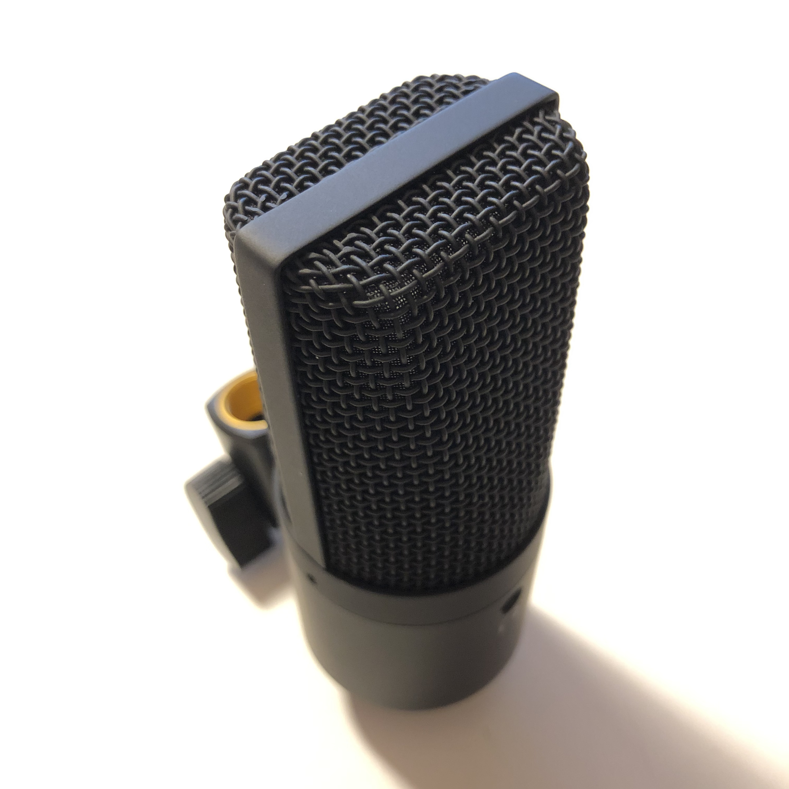

R403
3/1
Sleep, a poor man’s dinner.
3/2
揚げなすぼけなすおたんこなす
予定をいつもぎちぎちにしてしまっているから少しでも予期せぬ事態が起こるとすぐ崩壊する
予定を無理やり通そうとするのがいけないのかもしれないが、考えていた予定をやめてしまうと、たとえば今朝がんばって早起きしたのは何のためだったのかと思ってしまう。
誰かのために善意で自分の時間を犠牲にすることにまだ抵抗があるかもしれない
ああああああ
自分を中心に世界が回っているわけではないからしょうがない
もう寝るか
3/7
ありがとう、雛見沢。
ありがとう、すべての雛見沢。
3/8
自分の言葉に酔いしれているくらいが生きやすくていい
3/15
身の回りに甘々対応してくれる人と中辛対応してくれる人がいるからどちらもありがたい
3/16

マイク買った、いい！
目かゆいかゆいかゆいかゆいかゆいかゆいかゆいかゆい
右眼が天照使用中並みに紅い
3/20
人間関係むずかしいな
けどしょうがない
もっとうまく自分の意思を伝えつつ他の人のことも考えつつ生きたい
村上ラジオ聞いた、戦争をやめさせるための音楽
チープなタイトルだけれど、、、
Last night i had the strangest dreamの解説があった
普段歌詞とかけっこう無視したまま聞いてることけっこうあるからありがたい
いい曲
ドアーズのUnknown Soldiersもなんとなく反戦なのかなと思っていたけれど、あんな歌詞だったのか
ただ媚びへつらうことも決して悪ではない気もする
ほどほどにうまく和やかに関係を保っていくことは重要
全面戦争してしまうともう戻れないこともあるけれど
まだうまく取りなしていけばお互いそこまで最悪にならずに済むので
自分が媚びへつらっているように、相手も自分に気を遣ってくれているのが分かるので
あまり全面的に人を否定はしたくないし
してしまったら自分にとっても人と接する気力とか全て消えてしまうので
たしかになんかこの人とはだめだなというときもあるけれど、
たまにはこの人はいいところあるなということも少しあるので
なるべく尊重していけば
お互いよりかろやかに生きていける
気がする
攻殻機動隊の有栖田博士、かわいそうだなと思った
何のための研究
Hi soldiers,
What are you born to be?
Hi politicians,
What are you born to be?
Hi victims,
What are you born to be?
Hi scientists,
What are you born to be?
Hi musicians,
What are you born to be?
Hi painters,
What are you born to be?
Hi writers,
What are you born to be?
Hi people,
What are you born to be?
What are you born to be?
3/21
Good morning soldiers,
What are you born to be?
Good afternoon politicians,
What are you born to be?
Good evening victims,
What are you born to be?
What are you born to be?
3/23
ウィッチャーの新しいの出るのか、楽しみ
3/26
家族の問題とか不定期に何度も何度も浮上するとどうしても他の人たちにはこんなこと起きていないのだろうかと妬ましくなるけれどきっと家族ごとに問題は何かしらあるだろうしそれを比べてみたところでどうしようもないのだけれどどうすればいいのかな、かな
円満な家庭なんて誰がそんな無責任な言葉思いついたのかと思う。
今の家族みたいになってしまうなら将来家庭なんてもちたくない
ひぐらしをなぞり直しているとレナに自分が投影されて泣きたくなる
レナが自分を投影しているのか
きっとレナの方が壮絶でつらくてかなしくてどうしようもないことに間違いはないのだけれど
3/27
車のブレーキが効かなくなる夢見た
またか
この前は国が滅亡する夢見た
父が周期的におかしくなるけれど今回は前回より周期が短い
オカルティックナイン
おっぱいでかすぎ
3/28
父が殻に閉じこもって4日
紅茶美味ですわ
お嬢さま言葉思いついた人天才かもしれない
お坊ちゃま言葉はないのかな
お兄様と一緒に海に行きましょうね
志倉千代丸の描く物語や音楽はなぜあんなにエッジが効いているのか
3/30
ひさびさに英語をアウトプットした
脳が熱い
F my lf
Turn off the reality.
3/31
もうだめかもしれない。
できるかぎりのことはしているけれど、だめみたいだ
どうこうはたらきかけたところでどうしようもないのかもしれない
レナだったら無理矢理にでもこの状況をなんとかできていたのかもしれないけれど、僕には無理かも
4/1
今朝は元に戻っているような気がした
けれど、どうなんだろう
とりあえず危機は脱したようだけれど、あらゆる意味で今までとは異なるみたいだ
早く出たい